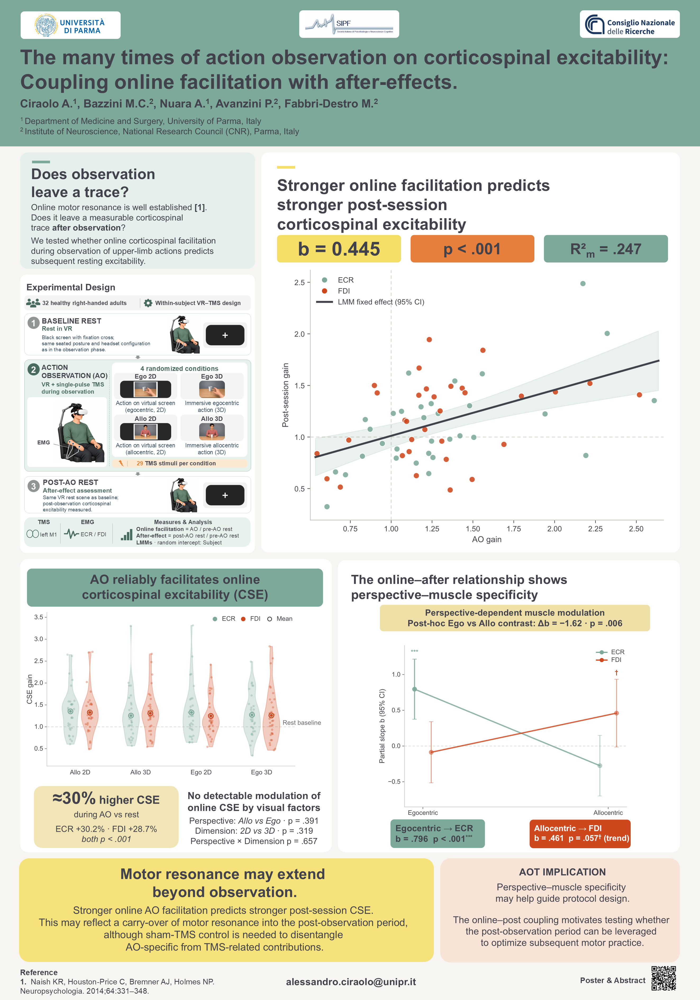

Poster

Abstract
The many times of action observation on corticospinal excitability:
Coupling online facilitation with after-effects.
Ciraolo A., Bazzini M.C., Nuara A., Avanzini P., Fabbri-Destro M.
Introduction & Aim. Transcranial magnetic stimulation–motor evoked potential (TMS–MEP) studies have shown that observing actions elicits muscle-specific facilitation of corticospinal excitability (CSE). However, little is known about the role of visual perspective (egocentric vs. allocentric) and stimulus dimensionality (2D vs. 3D) in shaping CSE (Naish et al., 2014). Moreover, while online facilitation during action observation (AO) is well established, few studies have investigated how this effect leaves traces into subsequent resting CSE. This study addressed these issues by applying an immersive VR paradigm to examine online and post-session CSE in upper-limb muscles.
Methods. Thirty-two healthy right-handed adults completed a within-subject design crossing visual perspective and stimulus dimensionality, with goal-directed actions presented via head-mounted display in counterbalanced order. During rest and action observation, single-pulse TMS was applied over the left primary motor cortex, recording MEPs from extensor carpi radialis (ECR; proximal) and first dorsal interosseous (FDI; distal). We derived two CSE indices: online facilitation during observation, and a post-session after-effect. Linear mixed-effects models, with subject as random intercept, tested whether online facilitation across conditions predicted the post-session one.
Results. AO elicited a reliable increase in CSE during observation, not modulated by visual perspective or stimulus dimensionality. Average online facilitation significantly predicted the magnitude of post-session one (β = 0.445, p < .001), suggesting that individual responsiveness during observation is associated with subsequent changes in excitability. For post-session facilitation, a Perspective × Muscle interaction (p = .014) indicated that the relationship between online and post-session facilitation depended on visual perspective and muscle. Specifically, during egocentric viewing, online facilitation predicted increased post-session excitability in ECR (β = 0.796, p < .001), with negligible effects on FDI. In contrast, during allocentric viewing, no effect was observed in ECR, while a trend emerged for FDI (β = 0.461, p = .057). No comparable interaction was found for stimulus dimensionality.
Discussion & Conclusions. The degree of motor facilitation during AO was linked to the magnitude of subsequent CSE changes, consistent with temporal continuity between online motor responsiveness and short-term after-effects. While the neural bases of such dissociation need to be further investigated, we suggest that the proximity between the observed muscle and the observer’s viewpoint acts as a modulator, making closer muscles more facilitated in the observer’s motor cortex. These results point to individual responsiveness and perspective–muscle specificity as two factors worth considering in the design of upper-limb AOT protocols.
Reference. Naish, K. R., Houston-Price, C., Bremner, A. J., & Holmes, N. P. (2014). Effects of action observation on corticospinal excitability: Muscle specificity, direction, and timing of the mirror response. Neuropsychologia, 64, 331–348. https://doi.org/10.1016/j.neuropsychologia.2014.09.034